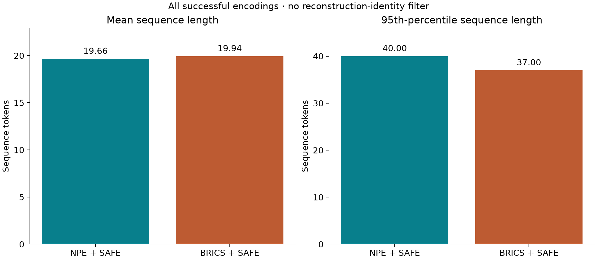
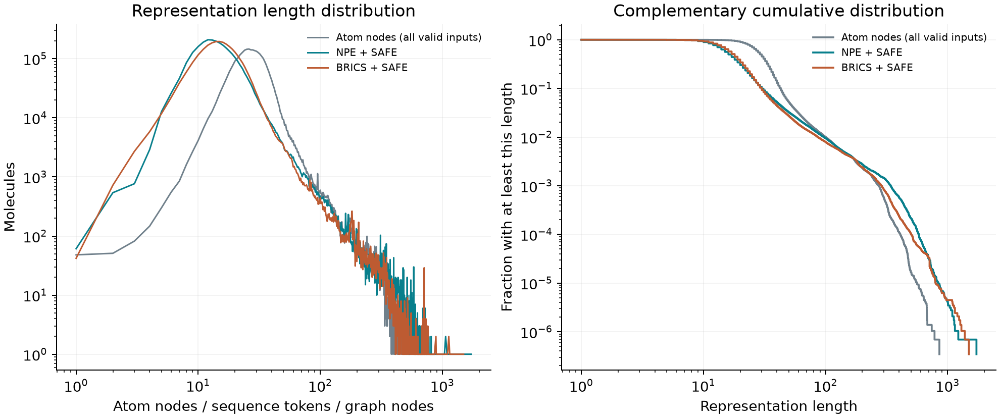
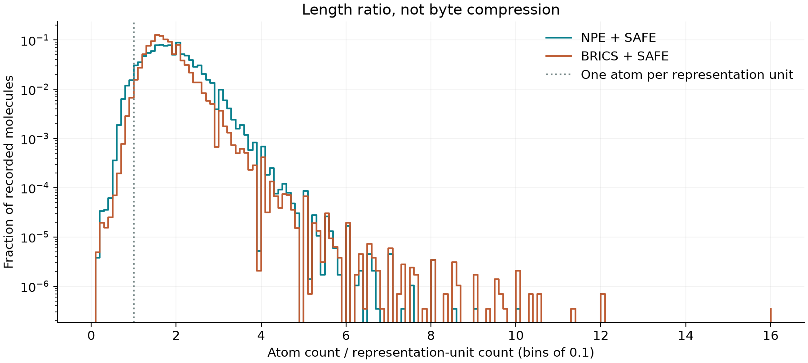
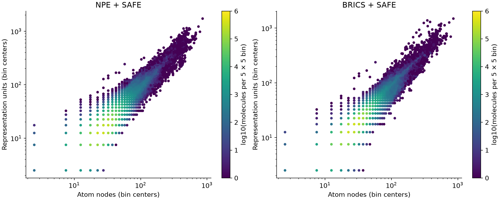
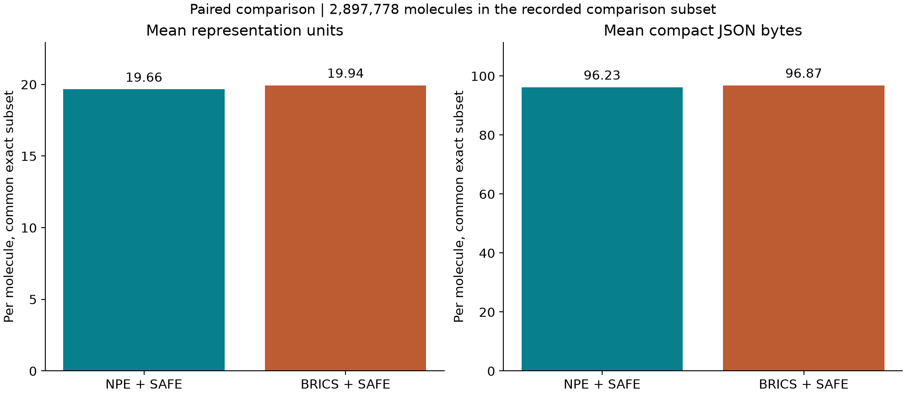
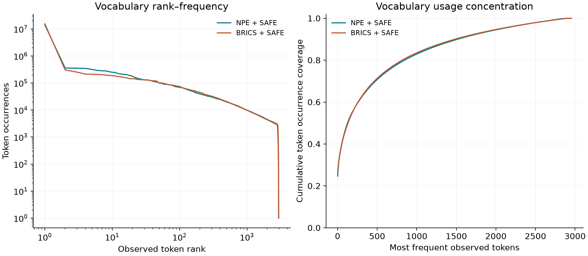

Encoding efficiency: all encoded molecules
The current focus is sequence length, vocabulary use, and storage. This table includes every successfully encoded molecule.
| Pipeline | Encoded molecules | Mean tokens | Median | p95 | p99 | Mean JSON bytes |
|---|---|---|---|---|---|---|
| NPE + SAFE | 2,897,797 | 19.663 | 15 | 40 | 96 | 96.23 |
| BRICS + SAFE | 2,897,797 | 19.943 | 17 | 37 | 85 | 96.87 |
NPE mean sequence reduction: 1.40%; mean compact JSON reduction: 0.67%. JSON size excludes model storage and is not a binary compression benchmark.

SAFE block counts
NPE + SAFE: mean 5.856 SAFE blocks across 2,897,778 recorded molecule counts.
BRICS + SAFE: mean 6.330 SAFE blocks across 2,897,778 recorded molecule counts.
Blocks are dot-separated SAFE pieces, including disconnected components. The available block-count denominator is reported separately from the all-encoding length statistics.
What the experiment shows
On 2,897,778 molecules in the recorded comparison subset, NPE + SAFE uses 19.662 tokens per molecule versus 19.942 for BRICS + SAFE: 1.40% fewer tokens. This comparison includes the connection syntax inside SAFE strings.
This result measures the complete partition-to-SAFE-to-BPE pipeline. It does not isolate the effect of partitioning alone, because the two sequence vocabularies are learned separately.
The average advantage is not uniform: the NPE + SAFE p95 length is 40 tokens versus 37 for BRICS + SAFE, and p99 is 96 versus 85. NPE has a longer high-length tail in this experiment.
NPE + SAFE median / p95 / p99 token lengths on the recorded subset: 15 / 40 / 96.
BRICS + SAFE median / p95 / p99 token lengths on the recorded subset: 17 / 37 / 85.
Shorter sequences can reduce the number of positions processed by a downstream model. No downstream training-speed, generation-quality, or property-prediction improvement has been measured here.
A separate pass over the per-molecule audit CSV verified all 2,897,819 source rows and the aggregate counts. On the common exact subset, NPE is shorter for 54.04% of molecules, BRICS is shorter for 36.86%, and 9.10% tie.
Measured results
| Pipeline | Recorded comparison molecules | Sequence vocabulary | Additional NPE motifs | Paired mean units | Paired mean JSON bytes | Model bytes |
|---|---|---|---|---|---|---|
| NPE + SAFE | 2,897,778 | 3,000 | 3000 | 19.662 | 96.2 | 445,788 |
| BRICS + SAFE | 2,897,778 | 3,000 | — | 19.942 | 96.9 | 95,245 |
NPE has an additional learned motif dictionary. A matched sequence vocabulary is not matched total model capacity. Means are computed over the recorded common subset; coverage is reported over all source records.
Length distributions and representation cost





Vocabulary units and their differences
SAFE sequence units are BPE string pieces. They need not be independently valid molecules or complete chemical fragments. BRICS uses fixed chemistry rules for partitioning; NPE learns frequent adjacent subgraphs. Both are then serialized as SAFE and receive fragment-scoped sequence BPE. SAFE stores connections inside its string, so an empty external edge table does not mean connections cost nothing.
The dictionaries share 1,665 exact string units; union size 4,335, Jaccard overlap 0.384. This includes special tokens and compares text, not token IDs or chemical equivalence.
Frequent units exclusive to NPE + SAFE
| String unit | Occurrences |
|---|---|
O=6 | 98,296 |
O=7 | 90,001 |
O=5 | 84,288 |
(=O)N | 81,307 |
O=8 | 73,209 |
O=4 | 57,061 |
)CC1 | 54,910 |
O=9 | 52,149 |
CCNC(=N)N | 48,495 |
C(C)=O | 44,721 |
Cl5 | 43,000 |
NC= | 42,578 |
Frequent units exclusive to BRICS + SAFE
| String unit | Occurrences |
|---|---|
N46 | 117,425 |
O34 | 103,159 |
N35 | 100,654 |
N47 | 85,671 |
N57 | 80,824 |
N36 | 68,177 |
)C | 68,056 |
C46=O | 60,739 |
C57 | 59,883 |
C46 | 59,524 |
C47=O | 56,460 |
N58 | 55,891 |
Most-used units overall
NPE + SAFE
| Unit | Occurrences on recorded molecules |
|---|---|
. | 14,071,986 |
C4 | 355,519 |
O | 352,230 |
C5 | 346,323 |
C6 | 317,561 |
C3 | 291,982 |
C | 282,302 |
C7 | 279,577 |
CC | 262,177 |
C1 | 248,202 |
N | 245,297 |
C8 | 224,368 |
BRICS + SAFE
| Unit | Occurrences on recorded molecules |
|---|---|
. | 15,445,696 |
C | 302,919 |
O | 251,650 |
8 | 212,021 |
6 | 209,979 |
7 | 205,882 |
9 | 204,635 |
5 | 194,450 |
C1 | 191,092 |
c1 | 186,383 |
N | 180,676 |
CC | 173,786 |
Reproducibility and scope
Encoding statistics and model fingerprints (JSON)
Source SHA-256: 87d10f64ed147c6371ff6d385f46762ef77df6368cc68768de58df134a05cbfb. Original ChEMBL 37 records are retained, including duplicates. Dataset: CC BY-SA 3.0, ChEMBL/EMBL-EBI.
Figure design references DemoDiff, Section 3.1 / Appendix B.2; plots show our measurements, not copied paper results.
No vocabulary-budget sweep or downstream neural-model experiment is claimed. Audit timestamp: 2026-10-09T16:27:46.660372+00:00.